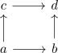

homotopy invariance of the integral of holomorphic functions
Proposition
Let $\Omega \subseteq \mathbb{C}$ be open and $f: \Omega \rightarrow \mathbb{C}$ be holomorphic and $\gamma_0,\gamma_1$ be homotopic in $\Omega$. Then
\begin{align*}
\int_{\gamma_0}(f(z) \mathrm{d}z) = \int_{\gamma_1} f(z) \mathrm{d}z
\end{align*}
Proof
Let $\Gamma: [0,1]^2 \rightarrow \Omega$ be a homotopy.
For each point $x \in \Omega$ choose a disk $D = B_{\varepsilon}(x)$ containing $x$. Then we get a decomposition (cf. open covering of the disk induces closed decomposition) of $\Gamma$ into small

cubes which lie fully in some disk. Then using cauchy's theorem for the disc we conclude that the path
\begin{align*}
a \rightarrow b \rightarrow d \rightarrow c \rightarrow a
\end{align*}
has zero as integral, hence
\begin{align*}
\int_{a \rightarrow b \rightarrow d} f =& \int_{a \rightarrow b \rightarrow d} f \mathrm{d}\gamma - \int_{a \rightarrow b \rightarrow d \rightarrow c \rightarrow a} f \\
= \int_{a \rightarrow b \rightarrow d} f \mathrm{d}\gamma - \int_{a \rightarrow b \rightarrow d \rightarrow c \rightarrow a} f \\
=& \int_{a \rightarrow c \rightarrow d} f
\end{align*}
which applied sufficiently many times shows the claim